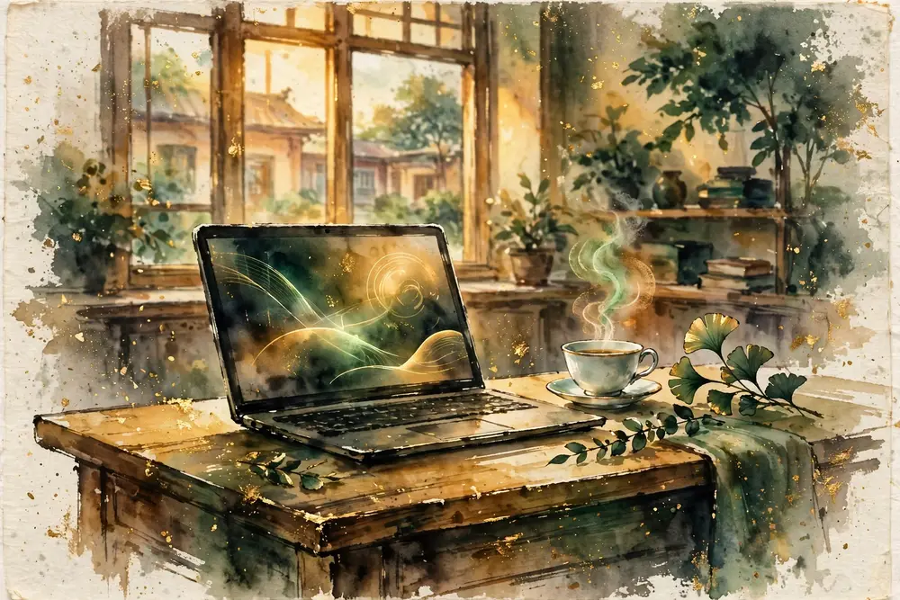
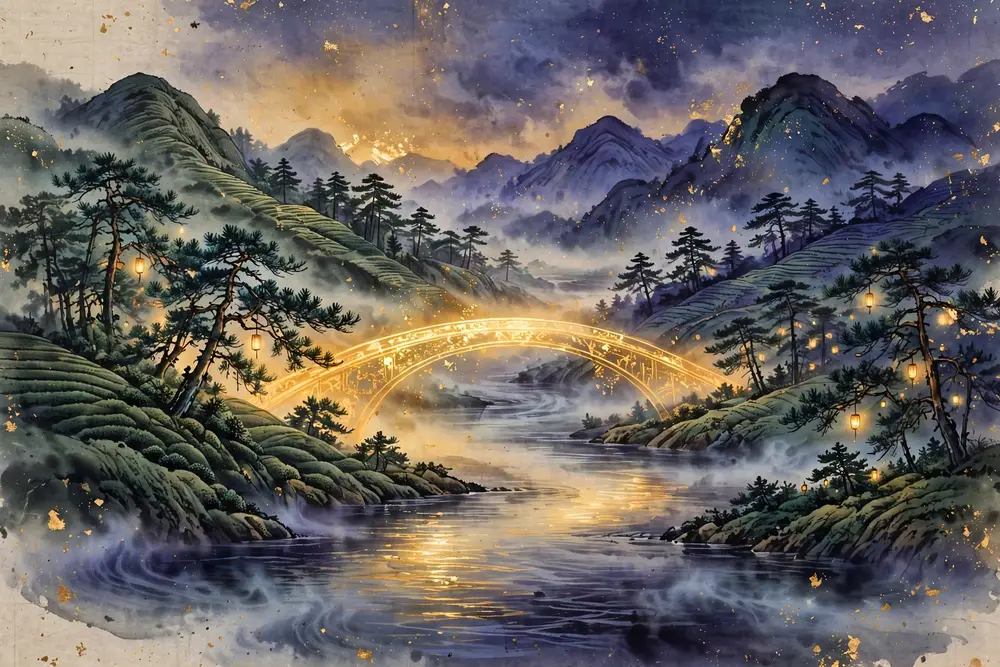

這一頁的性質：劉惠華博士個人品牌頁——博士論文寫茶文化、著作寫元宇宙茶文化與生成式 AI、亞威南區分院長、台灣正念茶師創始人；給想找她上課、做企業 AI 顧問、認識茶文化的人看；想讓人感覺溫暖、定靜、又跟得上 AI 時代。
所以畫風選：中國水墨水彩＋金箔點綴、米紙底色，茶湯琥珀金、墨綠、靛紫，因為茶湯與金箔是她茶席世界的顏色，靛紫是 AI 的科技感，兩者交會就是「從茶席到雲端」。
A porcelain teapot pouring a stream of amber tea into a small cup on a dark wooden tea table, steam rising and transforming into a glowing constellation of tiny violet light points and soft digital particles, misty ink-wash background in deep green and warm cream, gold foil accents, cinematic warm light, Chinese watercolor painting on rice paper, elegant and serene, wide landscape composition, no people, no faces, no text, no letters, no numbers, no watermarks
An open ancient Chinese book with blank cream pages resting on a wooden tea tray beside scattered dried tea leaves and a small porcelain gaiwan teacup, soft morning light, Chinese ink wash watercolor with delicate gold foil accents on rice paper, amber tea-gold and deep forest green palette, serene scholarly mood, no people, no faces, no text, no letters, no numbers, no watermarks
Glowing translucent chat bubbles and a soft rounded prompt panel floating above a wooden tea tray with a steaming porcelain cup, violet and amber light, Chinese ink wash watercolor with gold foil accents on rice paper, deep green background, elegant fusion of tea tradition and technology, no people, no faces, no text, no letters, no numbers, no watermarks
A collection of golden round seal stamps, silk ribbons and laurel sprigs arranged in a neat ceremonial row on warm rice paper, Chinese ink wash watercolor with gold foil accents, amber gold and deep forest green palette, soft shadows, refined and dignified, no people, no faces, no text, no letters, no numbers, no watermarks
A lecturer's wooden desk seen from behind the speaker, laptop showing glowing abstract charts, a steaming porcelain teacup beside it, warm classroom light through a window, Chinese ink wash watercolor with gold foil accents on rice paper, amber gold and deep green palette, calm and focused atmosphere, no people, no faces, no readable text, no letters, no numbers, no watermarks
A graceful arched bridge of warm golden light spanning a misty river between two shores, tea mountains and pine trees on both banks at dusk, lanterns glowing softly, Chinese ink wash watercolor with gold foil accents on rice paper, amber gold, deep green and indigo-violet palette, dreamlike and serene, wide landscape composition, no people, no faces, no text, no letters, no numbers, no watermarks
A five-line musical staff with glowing golden notes rising like steam from a porcelain teacup on a wooden tea tray, soft violet and amber light, Chinese ink wash watercolor with gold foil accents on rice paper, deep green background, elegant and poetic, no people, no faces, no text, no letters, no numbers, no watermarks
Misty terraced tea plantation at dawn, layers of deep green tea bushes fading into soft fog, a small wooden tea house with warm lamplight in the distance, a winding stone path, Chinese ink wash watercolor with gold foil accents on rice paper, amber gold and deep green palette, peaceful and meditative, wide landscape composition, no people, no faces, no text, no letters, no numbers, no watermarks
IMG-001｜hero / 專長雷射卡｜概念｜3:2
茶壺斟出琥珀茶湯，蒸氣化作紫色光點星空
A porcelain teapot pouring a stream of amber tea into a small cup on a dark wooden tea table, steam rising and transforming into a glowing constellation of tiny violet light points and soft digital particles, misty ink-wash background in deep green and warm cream, gold foil accents, cinematic warm light, Chinese watercolor painting on rice paper, elegant and serene, wide landscape composition, no people, no faces, no text, no letters, no numbers, no watermarks
IMG-002｜學經歷｜概念｜3:2
古書攤開在茶盤上，旁邊是茶葉與蓋碗
An open ancient Chinese book with blank cream pages resting on a wooden tea tray beside scattered dried tea leaves and a small porcelain gaiwan teacup, soft morning light, Chinese ink wash watercolor with delicate gold foil accents on rice paper, amber tea-gold and deep forest green palette, serene scholarly mood, no people, no faces, no text, no letters, no numbers, no watermarks
IMG-003｜專長（大卡）｜概念｜3:2
發光對話框浮在茶盤與熱茶上方
Glowing translucent chat bubbles and a soft rounded prompt panel floating above a wooden tea tray with a steaming porcelain cup, violet and amber light, Chinese ink wash watercolor with gold foil accents on rice paper, deep green background, elegant fusion of tea tradition and technology, no people, no faces, no text, no letters, no numbers, no watermarks
IMG-004｜專長（小卡）｜概念｜3:2
金色印章、絲帶與月桂枝整齊排列
A collection of golden round seal stamps, silk ribbons and laurel sprigs arranged in a neat ceremonial row on warm rice paper, Chinese ink wash watercolor with gold foil accents, amber gold and deep forest green palette, soft shadows, refined and dignified, no people, no faces, no text, no letters, no numbers, no watermarks
IMG-005｜專長（小卡）｜概念｜3:2
講師書桌上的筆電與一杯熱茶

A lecturer's wooden desk seen from behind the speaker, laptop showing glowing abstract charts, a steaming porcelain teacup beside it, warm classroom light through a window, Chinese ink wash watercolor with gold foil accents on rice paper, amber gold and deep green palette, calm and focused atmosphere, no people, no faces, no readable text, no letters, no numbers, no watermarks
IMG-006｜生活事蹟｜概念｜3:2
金色光橋橫跨霧中山河，連接兩岸

A graceful arched bridge of warm golden light spanning a misty river between two shores, tea mountains and pine trees on both banks at dusk, lanterns glowing softly, Chinese ink wash watercolor with gold foil accents on rice paper, amber gold, deep green and indigo-violet palette, dreamlike and serene, wide landscape composition, no people, no faces, no text, no letters, no numbers, no watermarks
IMG-007｜專長（小卡）｜概念｜4:5
金色音符如茶煙般從茶杯升起
A five-line musical staff with glowing golden notes rising like steam from a porcelain teacup on a wooden tea tray, soft violet and amber light, Chinese ink wash watercolor with gold foil accents on rice paper, deep green background, elegant and poetic, no people, no faces, no text, no letters, no numbers, no watermarks
IMG-008｜專長（小卡）｜概念｜3:2
清晨霧氣中的梯田茶園與小茶屋
Misty terraced tea plantation at dawn, layers of deep green tea bushes fading into soft fog, a small wooden tea house with warm lamplight in the distance, a winding stone path, Chinese ink wash watercolor with gold foil accents on rice paper, amber gold and deep green palette, peaceful and meditative, wide landscape composition, no people, no faces, no text, no letters, no numbers, no watermarks
JSON 陣列
[
{
"id": "IMG-001",
"file": "images/IMG-001.webp",
"section": "hero / 專長雷射卡",
"type": "概念",
"ratio": "3:2",
"ref": "無",
"prompt": "A porcelain teapot pouring a stream of amber tea into a small cup on a dark wooden tea table, steam rising and transforming into a glowing constellation of tiny violet light points and soft digital particles, misty ink-wash background in deep green and warm cream, gold foil accents, cinematic warm light, Chinese watercolor painting on rice paper, elegant and serene, wide landscape composition, no people, no faces, no text, no letters, no numbers, no watermarks",
"caption": "茶壺斟出琥珀茶湯，蒸氣化作紫色光點星空",
"alt": "青花瓷茶壺斟出琥珀茶湯，蒸氣化作紫色光點星空"
},
{
"id": "IMG-002",
"file": "images/IMG-002.webp",
"section": "學經歷",
"type": "概念",
"ratio": "3:2",
"ref": "無",
"prompt": "An open ancient Chinese book with blank cream pages resting on a wooden tea tray beside scattered dried tea leaves and a small porcelain gaiwan teacup, soft morning light, Chinese ink wash watercolor with delicate gold foil accents on rice paper, amber tea-gold and deep forest green palette, serene scholarly mood, no people, no faces, no text, no letters, no numbers, no watermarks",
"caption": "古書攤開在茶盤上，旁邊是茶葉與蓋碗",
"alt": "古書攤開在茶盤上，旁邊是散落的茶葉與蓋碗"
},
{
"id": "IMG-003",
"file": "images/IMG-003.webp",
"section": "專長（大卡）",
"type": "概念",
"ratio": "3:2",
"ref": "無",
"prompt": "Glowing translucent chat bubbles and a soft rounded prompt panel floating above a wooden tea tray with a steaming porcelain cup, violet and amber light, Chinese ink wash watercolor with gold foil accents on rice paper, deep green background, elegant fusion of tea tradition and technology, no people, no faces, no text, no letters, no numbers, no watermarks",
"caption": "發光對話框浮在茶盤與熱茶上方",
"alt": "發光的對話框浮在茶盤與熱茶上方"
},
{
"id": "IMG-004",
"file": "images/IMG-004.webp",
"section": "專長（小卡）",
"type": "概念",
"ratio": "3:2",
"ref": "無",
"prompt": "A collection of golden round seal stamps, silk ribbons and laurel sprigs arranged in a neat ceremonial row on warm rice paper, Chinese ink wash watercolor with gold foil accents, amber gold and deep forest green palette, soft shadows, refined and dignified, no people, no faces, no text, no letters, no numbers, no watermarks",
"caption": "金色印章、絲帶與月桂枝整齊排列",
"alt": "金色印章、絲帶與月桂枝整齊排列在米紙上"
},
{
"id": "IMG-005",
"file": "images/IMG-005.webp",
"section": "專長（小卡）",
"type": "概念",
"ratio": "3:2",
"ref": "無",
"prompt": "A lecturer's wooden desk seen from behind the speaker, laptop showing glowing abstract charts, a steaming porcelain teacup beside it, warm classroom light through a window, Chinese ink wash watercolor with gold foil accents on rice paper, amber gold and deep green palette, calm and focused atmosphere, no people, no faces, no readable text, no letters, no numbers, no watermarks",
"caption": "講師書桌上的筆電與一杯熱茶",
"alt": "講師書桌上的筆電與一杯熱茶，窗外透進暖光"
},
{
"id": "IMG-006",
"file": "images/IMG-006.webp",
"section": "生活事蹟",
"type": "概念",
"ratio": "3:2",
"ref": "無",
"prompt": "A graceful arched bridge of warm golden light spanning a misty river between two shores, tea mountains and pine trees on both banks at dusk, lanterns glowing softly, Chinese ink wash watercolor with gold foil accents on rice paper, amber gold, deep green and indigo-violet palette, dreamlike and serene, wide landscape composition, no people, no faces, no text, no letters, no numbers, no watermarks",
"caption": "金色光橋橫跨霧中山河，連接兩岸",
"alt": "金色光橋橫跨霧中山河，連接兩岸茶山"
},
{
"id": "IMG-007",
"file": "images/IMG-007.webp",
"section": "專長（小卡）",
"type": "概念",
"ratio": "4:5",
"ref": "無",
"prompt": "A five-line musical staff with glowing golden notes rising like steam from a porcelain teacup on a wooden tea tray, soft violet and amber light, Chinese ink wash watercolor with gold foil accents on rice paper, deep green background, elegant and poetic, no people, no faces, no text, no letters, no numbers, no watermarks",
"caption": "金色音符如茶煙般從茶杯升起",
"alt": "金色音符如茶煙般從茶杯升起，化作五線譜"
},
{
"id": "IMG-008",
"file": "images/IMG-008.webp",
"section": "專長（小卡）",
"type": "概念",
"ratio": "3:2",
"ref": "無",
"prompt": "Misty terraced tea plantation at dawn, layers of deep green tea bushes fading into soft fog, a small wooden tea house with warm lamplight in the distance, a winding stone path, Chinese ink wash watercolor with gold foil accents on rice paper, amber gold and deep green palette, peaceful and meditative, wide landscape composition, no people, no faces, no text, no letters, no numbers, no watermarks",
"caption": "清晨霧氣中的梯田茶園與小茶屋",
"alt": "清晨霧氣中的梯田茶園與一間小茶屋"
}
]